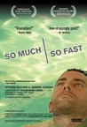
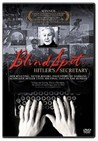
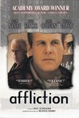
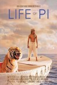
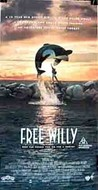
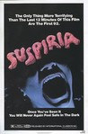
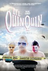
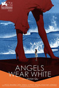
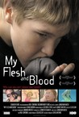
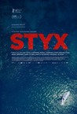

Movie Releases By Score
1301.
Control Room
Release Date:
May 21, 2004
Directed by Jehane Noujaim, an award-winning Arab-American filmmaker who has lived within and embraced both worlds, Control Room re-examines what is perhaps the pressing question of: "is America radicalizing or stabilizing the Arab world?" By providing a balanced view of Al-Jazeera's presentation of the second Iraq war to their worldwide Arab audience, it calls into question many of the prevailing images and positions offered up by the U.S. news media. (Magnolia Pictures)
|
|
1302.
Tarzan
Release Date:
June 18, 1999

With his wisecracking ape buddy Terk and neurotic elephant pal Tantor, Tarzan learns to survive in the animal kingdom. His "Two Worlds" collide with the arrival of humans, forcing Tarzan to choose between a "civilized" life with the beautiful Jane and the life he knows and loves with his gorilla family.
|
|

|
1303.
The Winslow Boy
Release Date:
April 30, 1999
Set in 1910, The Winslow Boy is based on a real-life story of a young cadet who is accused of stealing a five-shilling postal note. As his case proceeds, it challenges many long accepted legal notions and sets off a national frenzy, exacting a heavy price on the family that takes on his defense. (Sony Pictures Classics)
|
1304.
Only Lovers Left Alive
Release Date:
April 11, 2014

Adam and Eve have been lovers for centuries. Both are cultured intellectuals with an all-embracing passion for music, literature and science, who have evolved to a level where they no longer kill for sustenance, but still retain their innate wildness. Adam, a reclusive underground musician hiding out in the ruins of contemporary Detroit, despairs about human civilization’s decline, and worries about future survival. Eve, who is perhaps 3000 years old to Adam’s 500, takes a longer view of history and is more optimistic. She leaves her home in the ancient city of Tangier to come to his side. As blood has been tainted by the zombies (humans), the formerly immortal Adam and Eve must secure uncontaminated blood from hospitals or they will perish. Eve’s close friend, Christopher Marlowe, is an elder vampire who provides Eve with hospital blood. Adam gets his supply from Dr. Watson, a skittish hematologist who provides safe blood at a price. Adam and Eve’s precarious footing is further threatened by the uninvited arrival of Eve’s carefree and uncontrollable little sister Ava. Unlike Adam and Eve, Ava hasn’t yet learned to tame her wilder instincts, and her recklessness concerns Adam.
|
|
|  |
1305.
So Much So Fast
Release Date:
October 11, 2006
A black-humored cliffhanger of romance, guerrilla science and the redefinition of time, So Much So Fast unfolds like a nonfiction novel. Stephen Heywood finds out he has ALS. His brother Jamie becomes obsessed with finding a cure. And the woman who's falling in love with Stephen has a decision to make. (Balcony Releasing)
|
1306.
In a World...
Release Date:
August 9, 2013
An underachieving vocal coach is motivated by her father, the king of movie-trailer voice-overs, to pursue her aspirations of becoming a voice-over star. Amidst pride, sexism and family dysfunction, she sets out to change the voice of a generation.
|
|

|
1307.
Terms of Endearment
Release Date:
November 23, 1983

Following the mother-daughter relationship of Aurora Greenway (MacLaine) who doesn't like it when her daughter Emma (Winger) marries Flap (Daniels).
|

|
1308.
Poltergeist
Release Date:
June 4, 1982
Steven and Diane Freeling's (Craig T. Nelson and JoBeth Williams) quiet suburban life is disturbed when ghosts kidnap their youngest daughter, Carol Anne (Heather O'Rourke).
|

|
1309.
Walking Out
Release Date:
October 6, 2017
Once a year, fourteen-year-old David (Josh Wiggins) travels from his mother’s home in Texas to visit his loner father, Cal (Matt Bomer), in the remote mountains of Montana. There, the two embark on their annual hunting excursion, during which the taciturn Cal attempts to connect with his smartphone-addicted son. But when a terrifying turn of events leaves Cal critically wounded, it’s up to the teenage David to summon enough strength for both of them. [IFC Films]
|
1310.
Dawn of the Planet of the Apes
Release Date:
July 11, 2014

A growing nation of genetically evolved apes led by Caesar is threatened by a band of human survivors of the devastating virus unleashed a decade earlier. They reach a fragile peace, but it proves short-lived, as both sides are brought to the brink of a war that will determine who will emerge as Earth's dominant species.
|
|

|
1311.
The Untouchables
Release Date:
June 3, 1987
Federal Agent Eliot Ness sets out to stop Al Capone with a small, hand-picked team.
|
1312.
IMAX: Hubble 3D
Release Date:
March 19, 2010
Through the power of IMAX® 3D, Hubble 3D will enable moviegoers to journey through distant galaxies to explore the grandeur and mysteries of our celestial surroundings, and accompany space-walking astronauts as they attempt the most difficult and important tasks in NASA's history. The seventh film from the award-winning IMAX® Space Team, "Hubble 3D" will offer an inspiring and unique look into the Hubble Space Telescope's legacy and highlight its profound impact on the way we view the universe and ourselves. (Warner Bros. Pictures)
|
|
|  |
1313.
Blind Spot. Hitler's Secretary
Release Date:
January 24, 2003
In this documentary, Traudl Junge describes on camera for the first time her experience working as one of Adolf Hilter's private secretaries form 1942 until his suicide in 1945. (Sony Pictures Classics)
|

|
1314.
The Piano Teacher
Release Date:
March 29, 2002
Erika is a piano teacher at a prestigious music school in Vienna. In her early forties and single, she lives with her overprotective and controlling mother. Lonely and alienated, Erika finds solace by visiting sex shops and experimenting with masochism. [Kino International]
|
1315.
Trolösa
Release Date:
January 26, 2001
A deeply melancholy film about the hopelessness of modern relationships.
|
|
1316.
Into the Arms of Strangers: Stories of the Kindertransport
Release Date:
September 15, 2000
In an effort to remove Jewish children from Nazi territory in pre-World War II Europe, the "Kindertransport" sent children far away from their families to live with stangers, often never to see their parents again. In this documentary, the aging survivors and their rescuers tell their moving stories.
|
|

|
1317.
Praise
Release Date:
June 23, 2000
A sex-charged relationship between an unfocused, chain-smoking asthmatic and a nymphomaniac with eczema.
|
|  |
1318.
Affliction
Release Date:
December 30, 1998
An emotionally shattering drama about a man (Nolte) who has taken several wrong turns in his life and who now finds himself on a collision course with his own destiny. (Lions Gate Films)
|
1319.
Dead Poets Society
Release Date:
June 16, 1989
Robin Williams stars as John Keating, an unconventional teacher at a conservative New England prep school who inspires his students and encourages them with the rallying call "carpe diem" (seize the day).
|
|
1320.
Let the Sunshine In
Release Date:
April 27, 2018
Isabelle, Parisian artist, divorced mother, is looking for love, true love at last.
|
|

|
1321.
American Honey
Release Date:
September 30, 2016
Star (Sasha Lane), a teenage girl from a troubled home, runs away with a traveling sales crew who drive across the American Midwest selling magazine subscriptions door to door. Finding her feet in this gang of teenagers, one of whom is Jake (Shia LaBeouf), she soon gets into the group's lifestyle of hard-partying nights, law-bending days, and young love.
|
|  |
1322.
Life of Pi
Release Date:
November 21, 2012
Based on the best-selling novel by Yann Martel, is a magical adventure story centering on Pi Patel, the precocious son of a zookeeper. Dwellers in Pondicherry, India, the family decides to move to Canada, hitching a ride on a huge freighter. After a shipwreck, Pi is found adrift in the Pacific Ocean on a 26-foot lifeboat with a zebra, a hyena, an orangutan and a 450-pound Bengal tiger named Richard Parker, all fighting for survival.
|

|
1323.
Let Me In
Release Date:
October 1, 2010
An alienated 12-year-old boy befriends a mysterious young newcomer to his small New Mexico town, and discovers an unconventional path to adulthood. (Overture Films)
|

|
1324.
For Those in Peril
Release Date:
October 3, 2014
Aaron (George MacKay), a young misfit in a remote Scottish community, is the lone survivor of a strange fishing accident that claimed the lives of five men including his older brother. Spurred on by sea-going folklore and local superstition, the village blames him for this tragedy, making him an outcast amongst his own people. Steadfastly refusing to believe that his brother is dead, and possessed by grief, madness and magic, Aaron sets out to recover him.
|
1325.
Fences
Release Date:
December 16, 2016
In this adaptation of August Wilson's Pulitzer Prize and Tony Award-winning play, an African American father struggles with race relations in the United States while trying to raise his family in the 1950s and coming to terms with the events of his life.
|
|

|
1326.
Chats perchés
Release Date:
December 20, 2006
In his newest film, French documentarian and cinema-essayist Chris Marker reflects on French and international politics, art and culture at the start of the new millennium. In November 2001, the filmmaker became intrigued, as did many other Parisians, by the sudden appearance of alluring portraits of grinning yellow cats on buildings, Metro walls and other public surfaces. Marker's cinematic efforts to document the mysterious materializations of this charming feline throughout Paris are a recurring theme of The Case of the Grinning Cat. (First Run/Icarus Films)
|
1327.
The Witness
Release Date:
June 3, 2016
Kitty Genovese became synonymous with apathy after news that she was stabbed to death on a New York City street while 38 witnesses did nothing. Forty years later, her brother decides to find the truth. He uncovers a lie that transformed his life, condemned a city and defined an era.
|
|
1328.
Miss Bala
Release Date:
October 14, 2011
A young woman working the beauty pageant circuit in Mexico gets more than she bargained for when a crime boss sees her as the perfect drug mule.
|
|
1329.
Birders: The Central Park Effect
Release Date:
January 18, 2013
A varied group of New Yorkers with attitude reveals how a hidden world of beautiful wild birds in the middle of Manhattan has upended and magically transformed their lives.
|
|
1330.
Hermia & Helena
Release Date:
May 26, 2017
Camila (Agustina Muñoz), a young Argentine theater director, travels from Buenos Aires to New York for an artist residency to work on a new Spanish translation of Shakespeare’s A Midsummer Night’s Dream. Upon her arrival, she quickly realizes that her work isn't compensating for the loss of her friends and the lover she left behind. When she begins to receive a series of mysterious postcards from Danièle (Mati Diop), a former participant in the same residency, Camila second-guesses her artistic endeavors and begins to seek answers about her past. [Kino Lorber]
|
|
1331.
Fill the Void
Release Date:
May 24, 2013
A devout 18-year-old Israeli is pressured to marry the husband of her late sister. Declaring her independence is not an option in Tel Aviv's ultra-Orthodox Hasidic community where religious law and the rabbi's word are absolute.
|
|
1332.
Keep the Lights On
Release Date:
September 7, 2012
Keep the Lights On chronicles an emotionally and sexually charged journey of two men in New York City through love, friendship, and addiction. Documentary filmmaker Erik and closeted lawyer Paul meet through a casual encounter, but soon find a deeper connection and become a couple. Individually and together, they are risk takers—compulsive, and fueled by drugs and sex. In an almost decade-long relationship defined by highs, lows, and dysfunctional patterns, Erik struggles to negotiate his own boundaries and dignity while being true to himself. Director Ira Sachs’s fearlessly personal screenplay is anchored by Lindhardt, who embodies Erik’s isolation and vulnerability with a gentle presence. Harrowing and romantic, visceral and layered, Keep the Lights On is a film that looks at love and all of its manifestations, taking it to dark depths and bringing it back to a place of grace. (Music Box Films)
|
|

|
1333.
Mother
Release Date:
March 12, 2010
The latest film from award-winning Korean director Bong Joon-ho (The Host) is a unique murder mystery about a mother's primal love for her son. Mother is a devoted single parent to her simple-minded twenty-seven-year-old son, Do-joon. Often a source of anxiety to his mother, Do-joon behaves in foolish or simply dangerous ways. One night, while walking home drunk, he encounters a school girl who he follows for a while before she disappears into a dark alley. The next morning, she is found dead in an abandoned building and Do-joon is accused of her murder. An inefficient lawyer and an apathetic police force result in a speedy conviction. His mother refuses to believe her beloved son is guilty and immediately undertakes her own investigation to find the girl’s killer. In her obsessive quest to clear her son’s name, Mother steps into a world of unimaginable chaos and shocking revelations. (Magnolia Pictures)
|
|  |
1334.
Free Willy
Release Date:
July 16, 1993
Captured at sea and confined in a small tank at an aquatic park, Willy (Keiko the Orca whale) is an unhappy and unpredictable attraction. No one understands Willy - except a scruffy street kid named Jesse who knows what it's like to be without a family. Together these two form a special bond -- one so strong that they're willing to risk it all to find a way home. (Warner Bros.)
|
|  |
1335.
Suspiria
Release Date:
August 12, 1977
A newcomer to a fancy ballet academy gradually comes to realize that the school is a front for something far more sinister and supernatural amidst a series of grisly murders.
|

|
1336.
Joe Strummer: The Future Is Unwritten
Release Date:
November 2, 2007
As the lead singer of The Clash from 1977 onward, Joe Strummer changed people's lives forever. Four years after his death, his influence reaches out around the world, more strongly now than ever before. In The Future Is Unwritten, from British film director Julien Temple, Joe Strummer is revealed not just as a legend or musician, but as a true communicator of our times. Drawing on both a shared punk history and the close personal friendship that developed over the last years of Joe's life, Julien Temple's film is a celebration of Joe Strummer--before, during, and after The Clash. (IFC Films)
|

|
1337.
Searching for Sugar Man
Release Date:
June 29, 2012
Searching for Sugar Man tells the incredible true story of Rodriguez, the greatest '70s rock icon who never was. Discovered in a Detroit bar in the late '60s by two celebrated producers struck by his soulful melodies and prophetic lyrics, they recorded an album which they believed would secure his reputation as the greatest recording artist of his generation. In fact, the album bombed and the singer disappeared into obscurity amid rumors of a gruesome on-stage suicide. But a bootleg recording found its way into apartheid South Africa and, over the next two decades, he became a phenomenon. The film follows the story of two South African fans who set out to find out what really happened to their hero. Their investigation leads them to a story more extraordinary than any of the existing myths about the artist known as Rodriguez. (Sony Pictures Classics)
|
1338.
I Am Love
Release Date:
June 18, 2010
I am Love tells the story of the wealthy Recchi family, whose lives are undergoing sweeping changes. Eduardo Sr., the family patriarch, has decided to name a successor to the reins of his massive industrial company, surprising everyone by splitting power between his son Tancredi, and grandson Edo. But Edo dreams of opening a restaurant with his friend Antonio, a handsome and talented chef. At the heart of the family is Tancredi’s wife Emma, a Russian immigrant who has adopted the culture of Milan. An adoring and attentive mother, her existence is shocked to the core when she falls quickly and deeply in love with Edo’s friend and partner Antonio, and embarks on a passionate love affair that will change her family forever. [Magnolia]
|
|

|
1339.
Sing Street
Release Date:
April 15, 2016
In 1980s Dublin, 14-year-old Conor (Ferdia Walsh-Peelo) is looking for a break from a home strained by his parents’ relationship and money troubles, while trying to adjust to his new inner-city public school where the kids are rough and the teachers are rougher. He finds a glimmer of hope in the mysterious, über-cool and beautiful Raphina (Lucy Boynton), and with the aim of winning her heart he invites her to star in his band’s music videos. There’s only one problem: he’s not part of a band…yet. She agrees, and now Conor must deliver what he’s promised - calling himself “Cosmo” and immersing himself in the vibrant rock music trends of the decade, he forms a band with a few lads, and the group pours their heart into writing lyrics and shooting videos. [TWC]
|

|
1340.
Keane
Release Date:
September 9, 2005
Damian Lewis's riveting, visceral performance of a man grappling with the effects of a profound loss makes Keane a complex, deeply humane and unforgettable portrait. (Magnolia Pictures)
|

|
1341.
Brawl in Cell Block 99
Release Date:
October 6, 2017
A former boxer named Bradley (Vince Vaughn) loses his job as an auto mechanic, and his troubled marriage is about to expire. At this crossroads in his life, he feels that he has no better option than to work for an old buddy as a drug courier. This improves his situation until the terrible day that he finds himself in a gunfight between a group of police officers and his own ruthless allies. When the smoke clears, Bradley is badly hurt and thrown in prison, where his enemies force him to commit acts of violence that turn the place into a savage battleground.
|
1342.
Yellow Submarine
Release Date:
November 13, 1968
The Beatles agree to accompany Captain Fred in his Yellow Submarine and go to Pepperland to free it from the music hating Blue Meanies.
|
|
1343.
The Law in These Parts
Release Date:
November 14, 2012
Alexandrowicz's documentary is an examination of the legal infrastructure put in place by Israel for the West Bank and Gaza Strip.
|
|

|
1344.
Va Savoir (Who Knows?)
Release Date:
September 29, 2001
A romantic comedy which follows three men and three women as they become entangled in each other's lives during a brief run of a play in Paris. (Sony Pictures Classics)
|

|
1345.
Manufactured Landscapes
Release Date:
June 20, 2007
Manufactured Landscapes begins as a portrait of acclaimed Canadian photographer Edward Burtynsky, who specializes in large-scale images of vast industrial landscapes. It quickly develops into a meditation on the human and environmental costs of the permanent and profound changes our planet is experiencing. Focusing on Burtynsky's images of China as it undergoes an unprecedented transformation into a 21st century powerhouse, the film’s surface is beautiful, its implications frightening. Largely shot by Peter Mettler, it captures a brave new world that manages to be both luscious and unutterably repellent, often simultaneously. (Film Forum)
|
|  |
1346.
Li'l Quinquin
Release Date:
January 2, 2015
This absurdist, metaphysical murder mystery opens with the discovery of human body parts stuffed inside a
cow – a literal bête humaine — on the outskirts of the English Channel in northern France. The bumbling and mumbling Captain Van der Weyden (Bernard Pruvost) is assigned to investigate the crime, but he has to contend with a young prankster, the mischievous Quinquin (Alane Delhaye), as he proceeds to investigate the case. [Kino Lorber]
|
1347.
Brand Upon the Brain!
Release Date:
May 9, 2007
Brand Upon the Brain! In which the shocking truth is finally revealed about young Guy Maddin and his hellish childhood on a remote island, under the hyper-watchful eye of a crazed mother hellbent on restoring her youth and a diabolically distant scientist-father, proprietors of a mom-and-pop orphanage they surreptitiously operate within the dank confines of the family lighthouse. Watch! as the sex instinct grabs hold of young Maddin and his sister! Thrill! as the Mysteries of the Light House are divined by teen detectives! Reel! at the headstrong invention and heart-stopping rhythms of the elder Maddin's heroic silent moviemaking!! (The Film Company)
|
|
1348.
Being Frank: The Chris Sievey Story
Release Date:
TBA
It's a documentary about the life of eccentric comidian Frank Sidebottom who wore a huge paper mache' head and whose true identity was a closely guarded secret until after died. The 2014 Magnolia Pictures film titled Frank was inspired by his sensational mystery.
|
|

|
1349.
The Last Black Man in San Francisco
Release Date:
June 14, 2019
Jimmie Fails dreams of reclaiming the Victorian home his grandfather built in the heart of San Francisco. Joined on his quest by his best friend Mont, Jimmie searches for belonging in a rapidly changing city that seems to have left them behind. As he struggles to reconnect with his family and reconstruct the community he longs for, his hopes blind him to the reality of his situation. [A24]
|

|
1350.
Contemporary Color
Release Date:
March 1, 2017
In the summer of 2015, legendary musician David Byrne staged an event at Brooklyn's Barclays Center to celebrate the art of Color Guard: synchronized dance routines involving flags, rifles, and sabers. Recruiting performers that include the likes of Saint Vincent, Nelly Furtado, Ad-Rock, and Ira Glass to collaborate on original pieces with 10 color guard teams from across the US and Canada, Contemporary Color is a beautifully filmed snapshot of a one-of-a-kind live event.
|
|
|
1351.
Black Swan
Release Date:
December 3, 2010
Black Swan is a psychological thriller set in the world of New York City ballet. Featured dancer, Nina, finds herself locked in a web of competitive intrigue with a new rival at the company. (Fox Searchlight)
|

|
1352.
Our Children
Release Date:
August 2, 2013
Murielle and Mounir love each other passionately. Ever since he was a boy, the young man has been living with Doctor Pinget who provides him with a comfortable life. When Mounir and Murielle decide to marry and have children, the couple's dependence on the doctor becomes excessive. Murielle finds herself caught up in an unhealthy emotional climate that insidiously leads the family towards a tragic outcome. [DistriB Films]
|
1353.
Monsters, Inc.
Release Date:
November 2, 2001
The Academy Award-winning creators of "Toy Story" open the door to a frightfully funny world of monsters and mayhem and scare up lots of laughs in their new movie, Monsters, Inc. [Disney/Pixar]
|
|

|
1354.
Hilary and Jackie
Release Date:
December 30, 1998
The story of the brilliant concert cellist Jacqueline du Pre, seen from the perspectives of her sister Hilary and brother Piers.
|
|  |
1355.
Angels Wear White
Release Date:
May 4, 2018
In a small seaside town, two schoolgirls are assaulted by a middle-aged man in a motel. Mia, a teenager who was working on reception that night, is the only witness. For fear of losing her job, she says nothing. Meanwhile, 12-year-old Wen, one of the victims, finds that her troubles have only just begun. Trapped in a world that offers them no safety, Mia and Wen will have to find their own way out.
|
1356.
Lady and the Tramp
Release Date:
June 22, 1955
The romantic tale of a sheltered uptown Cocker Spaniel dog and a streetwise downtown Mutt.
|
|
1357.
Drive
Release Date:
September 16, 2011
Drive is the story of a Hollywood stunt driver by day, a loner by nature, who moonlights as a top-notch getaway driver-for-hire in the criminal underworld. He finds himself a target for some of LA's most dangerous men after agreeing to aid the husband of his beautiful neighbor, Irene. When the job goes dangerously awry, the only way he can keep Irene and her son alive is to do what he does best—Drive! [FilmDistrict]
|
|
1358.
Indignation
Release Date:
July 29, 2016
In 1951, Marcus Messner (Logan Lerman), a working class Jewish boy from Newark, New Jersey, travels on scholarship to a small, conservative college in Ohio, thus exempting him from being drafted into the Korean War. But once there, Marcus’s growing infatuation with his beautiful classmate Olivia Hutton (Sarah Gadon), and his clashes with the college’s imposing Dean, Hawes Caudwell (Tracy Letts), put his and his family’s best laid plans to the ultimate test.
|
|

|
1359.
Bird
Release Date:
September 30, 1988
Bird, a film burnished with the magic of that 1946 concert encounter between legend and future legend and honored with an Academy Award for Best Sound in its spellbinding recreation of a man and his music. Like jazz itself, Bird rings with counterpoints and embellishments. Past and future overlap as the film explores Yardbird's soaring skill and destructive excesses. (Warner Bros.)
|

|
1360.
A Brief History of Time
Release Date:
August 21, 1992
A film about the life and work of Stephen Hawking, who despite his near total paralysis is one of the great minds of all time.
|

|
1361.
Enough Said
Release Date:
September 18, 2013
Eva, a divorced single parent, spends her days enjoying work as a masseuse but dreading her daughter's impending departure for college. She meets Albert - a sweet, funny and like-minded man also facing an empty nest. As their romance quickly blossoms, Eva befriends Marianne, her new massage client. Marianne is a beautiful poet who seems "almost perfect" except for one prominent quality: she rags on her ex-husband way too much. Suddenly, Eva finds herself doubting her own relationship with Albert when she learns he's Marianne's ex-husband.
|
1362.
Bright Lights: Starring Carrie Fisher and Debbie Reynolds
Release Date:
TBA
Carrie Fisher and Debbie Reynolds star in a tender portrait of Hollywood royalty in all its eccentricity. From the red carpet to the back alleys behind it, the documentary is about the bonds of family love, which are beautifully bitter-sweet.
|
|

|
1363.
Play Misty for Me
Release Date:
November 12, 1971
A brief fling between a male disc jockey and an obsessed female fan takes a frightening, and perhaps even deadly turn when another woman enters the picture.
|

|
1364.
The Green Fog
Release Date:
January 4, 2018
Director Guy Maddin's interpretation of the Alfred Hitchcock classic Vertigo, pieced together using footage from old films and television shows shot in and around the San Francisco area.
|
1365.
28 Weeks Later
Release Date:
May 11, 2007
28 Weeks Later, the follow up to 28 Days Later, picks up six months after the rage virus has annihilated the Mainland Britain. The U.S. Army declares that the war against infection has been won, and that the reconstruction of the country can begin. As the first wave of refugees return, a family is reunited, but one of them unwittingly carries a terrible secret. The virus is not yet dead, and this time, it is more dangerous than ever. (Fox Atomic)
|
|
1366.
The Age of Shadows
Release Date:
September 23, 2016
The 1920s. Korea has fallen under Japanese rule. Lee Jung-chool (Song Kang-ho), a Korean police captain in the Japanese police force, is given a special mission to infiltrate the armed resistance fighting for Korean independence. He approaches Kim Woo-jin (Gong Yoo), a leader of the resistance. These two men who stand on opposite sides of their historical era, each knowing the identity and intentions of the other, become close without revealing their inner thoughts. Meanwhile intel is being leaked on both sides, and no one knows who the informants are. Members of the resistance meet in Shanghai to obtain explosives that will be used to destroy facilities of the Japanese Headquarters in Seoul, while the Japanese police follow them and gather in Shanghai. The pursued and the pursuers are locked in an operation where each side uses the other. Meanwhile, a train carrying explosives passes the border and heads towards Seoul. [CJ Entertainment]
|
|
1367.
Clouds of Sils Maria
Release Date:
April 10, 2015
At the peak of her international career, Maria Enders (Juliette Binoche) is asked to perform in a revival of the play that made her famous twenty years ago. But back then she played the role of Sigrid, an alluring young girl who disarms and eventually drives her boss Helena to suicide. Now she is being asked to step into the other role, that of the older Helena. She departs with her assistant (Kristen Stewart) to rehearse in Sils Maria; a remote region of the Alps. A young Hollywood starlet with a penchant for scandal (Chloë Grace Moretz) is to take on the role of Sigrid, and Maria finds herself on the other side of the mirror, face to face with an ambiguously charming woman who is, in essence, an unsettling reflection of herself.
|
|

|
1368.
Long Strange Trip
Release Date:
May 26, 2017
The tale of the Grateful Dead is inspiring, complicated, and downright messy. A tribe of contrarians, they made art out of open-ended chaos and inadvertently achieved success on their own terms. Never-before-seen footage and interviews offer this unprecedented and unvarnished look at the life of the Dead.
|

|
1369.
The Boys: The Sherman Brothers' Story
Release Date:
May 22, 2009
The Boys: The Sherman Brothers' Story is an intimate journey through the lives of Robert B. Sherman and Richard M. Sherman, the astoundingly prolific, Academy Award-winning songwriting team that defined family musical entertainment for five decades. The feature-length documentary, conceived produced and directed by two of the songwriter' sons, takes audiences behind the scene of the Hollywood magic factory and offers a rare glimpse of a unique creative process at work. It also explores a deep and longstanding rift that has kept the brothers personally estranged throughout much of their unparalleled professional partnership. (Walt Disney Pictures)
|

|
1370.
Control
Release Date:
October 10, 2007
Ian Curtis has aspirations beyond the trappings of small-town life in 1970s England. Wanting to emulate his musical heroes, such as David Bowie and Iggy Pop, he joins a band, and his musical ambition begins to thrive. Soon, though, the everyday fears and emotions that fuel his music slowly begin to eat away at him. Married young, with a daughter, he is distracted from his family commitments by a new love and the growing expectations of his band, Joy Division. The strain manifests itself in his health. With epilepsy adding to his guilt and depression, desperation takes hold. Surrendering to the weight on his shoulders, Ian's tortured soul consumes him. (The Weinstein Company)
|
|
|
1371.
Private Property
Release Date:
May 18, 2007
An old, but beautiful farm in Belgium is home to Pascale (Huppert) and her twin sons Thierry and Francois (Jérémie and Yannick Renier). Although loving and ostensibly supportive of one another, each is still reeling from the divorce that divided the family some years earlier. (New Yorker Films)
|

|
1372.
Deep Sea
Release Date:
March 3, 2006
Deep Sea 3D, the new immersive, underwater adventure from IMAX, transports audiences deep below the ocean surface in multiple locations around the waters of the globe and gives them never-before-seen, up-close encounters with a wide range of undersea life. (IMAX)
|
1373.
Henri Langlois: The Phantom of the Cinematheque
Release Date:
October 12, 2005
This documentary chronicles the life, times, and passions of the legendary film archivist.
|
|
|  |
1374.
My Flesh and Blood
Release Date:
November 28, 2003
A feature length verit documentary about the Tom family -- eleven special needs children adopted by Fairfield, California mother Susan Tom -- and the story of Susan's battle with her emotionally disturbed teenage son. (Strand Releasing)
|
1375.
Eureka
Release Date:
May 4, 2001
This beautifully composed black & white film explores a transcendent story of redemption. On what seemed to be a normal morning in southwest Japan, a crazed killer, apparently without motive, hijacks a city bus. In the ensuing carnage only three people survive - the driver, a schoolgirl and her older brother. (The Shooting Gallery)
|
|
1376.
The House of Mirth
Release Date:
December 22, 2000
Lily Bart (Anderson) is a ravishing socialite at the height of her success who quickly discovers the precariousness of her position when her beauty and charm start attracting unwelcome interest and jealousy. (Sony Pictures Classics)
|
|
1377.
Starting Out in the Evening
Release Date:
November 23, 2007
All that remains for Leonard Schiller is his work. His one enduring goal in life is to finish the novel whose completion has eluded him for ten years. With his earlier books out of print, he has learned to starve himself of the desire for the success he was once so close to, though beneath this practice lies a pull for his work to be rediscovered. Schiller’s main contact to the world is through his daughter, Ariel, with whom he has settled into an amiable relationship, though he must hide his disappointment that at 39 she remains befuddled by life, still looking for love and a father for a longed-for child. Schiller’s world is shaken when Heather Wolfe, a smart, ambitious graduate student, convinces him that she can use her thesis on his work to bring him back into the literary world spotlight. (Roadside Attractions)
|
|

|
1378.
3 Faces
Release Date:
March 8, 2019
Well-known actress Behnaz Jafari is distraught by a provincial girl’s video plea for help - oppressed by her family to not pursue her studies at the Tehran drama conservatory. Behnaz abandons her shoot and turns to filmmaker Jafar Panahi to help solve the mystery of the young girl’s troubles. They travel by car to the rural northwest where they have amusing encounters with the charming folk of the girl’s mountain village. But the city visitors soon discover that the protection of age-old traditions is as generous as local hospitality. [Cannes]
|
1379.
Lifeboat
Release Date:
January 28, 1944
Several survivors of a torpedoed ship find themselves in the same boat with one of the men who sunk it.
|
|
1380.
Head-On
Release Date:
January 21, 2005
A marriage of convenience in Hamburg between two troubled Turks changes both their lives in this fine, gritty, contemporary love story. Director Fatih Akin dives deep into Turkish culture and explores the slippery slope of identity and cultural pride faced by Turks who either move to or are born in Germany. (Strand Releasing)
|
|

|
1381.
Airplane!
Release Date:
July 2, 1980
A straight-faced yet absurdist comedy about a burned out lovelorn ex-pilot is pressed into service when an airliner's crew succumbs to food poisoning.
|

|
1382.
Lightning in a Bottle
Release Date:
October 22, 2004
On February 7th, 2003, renowned artists across multiple music genres and generations commandeered the stage at New York City?s Radio City Music Hall to pay tribute to their common heritage and passion - the blues. This documentary captures the night?s magic and weaves a history of the blues through the juxtaposition of performances, backstage interviews, rehearsals and archival clips of some of the greatest names in American music. (Sony Pictures Classics)
|

|
1383.
Beware of Mr. Baker
Release Date:
November 28, 2012
Born in South East London the same week the Nazis began bombing, Ginger Baker’s first memory was running after a train that carried his father off to death in WWII. From his music to his life, at the expense of family and fortune, Ginger would never be left behind on the tracks again. Though best known for his work with Eric Clapton in Cream and Blind Faith, the world’s greatest drummer did not hit his stride until years later in 1972 when he drove the first Range Rover ever produced from London to Nigeria in pursuit of the African rhythms and musical icon, Fela Kuti. There he found his Mecca of drumming, introducing the African beat and “world music” to the West, years before any other musicians in the field. The documentary includes stories from his ex-wives, children, and many of the greatest living musicians that worked with Ginger including Eric Clapton, Steve Winwood, Charlie Watts, Mickey Hart, Carlos Santana, Max Weinberg, Chad Smith, Femi Kuti, Neal Peart, Simon Kirke, Marky Ramone and many more.
|

|
1384.
Aberdeen
Release Date:
August 17, 2001
A modern, raw, pitch-black comedy about a young woman who travels from Scotland to Norway to find her estranged, alcoholic father and bring him home. (First Run Features)
|
1385.
The Deep End
Release Date:
August 8, 2001
A story of a mother's relationship with her son as she struggles desperately to cope with a crisis that threatens to envelop her entire world. In the classical tradition of the American film melodrama, The Deep End explores the depths of familial love, the boundaries of communication, and the quiet lonely beauty of self-sacrifice. (i5 Films)
|
|

|
1386.
The Taste of Others
Release Date:
February 9, 2001
The story of a factory owner who meets an actress who is a friend of a waitress who meets a bodyguard who works with a chauffeur who drives for an interior decorator who is the wife of the factory owner who would like to befriend with some artists who... (Offline Releasing)
|
|
|
1387.
Thirteen
Release Date:
June 2, 2000
The quasi-documentary story of a year in the life of 13-year-old Virginia native Nina and her mother.
|

|
1388.
Castle in the Sky
Release Date:
April 1, 1989
A young boy and a girl with a magic crystal must race against pirates and foreign agents in a search for a legendary floating castle.
|

|
1389.
In the Fog
Release Date:
June 14, 2013
In 1942, the western frontier of the USSR is under German occupation, and local partisans are fighting a brutal resistance campaign. A man is wrongly accused of collaboration. Desperate to save his dignity, he must make a moral choice under immoral circumstances.
|

|
1390.
My Joy
Release Date:
September 30, 2011
Truck driver Georgy sets out on a provincial Russian highway for a routine delivery, but a series of chance encounters see his journey spiral out of control. A roadside police check, a war veteran, and a young prostitute lead him to a village from which there appears to be no way out – where the locals struggle to survive a tough, elemental world, and the past holds a grip on their everyday lives. Caught in a merciless dead end, Georgy's unexpected fate is the crux of award-winning documentarian Sergei Loznitsa's unique and original feature debut, My Joy. Based on true stories the director encountered during his decade-long pilgrimage by road through Russia, My Joy is a daring and haunting parable from an arresting new voice in feature filmmaking. [Kino Lorber Films]
|

|
1391.
Funny Ha Ha
Release Date:
April 29, 2005
When you graduate college you easily sashay into the world of adulthood, start a career, and get serious, right? Wrong. Marnie has left college, but not her drinking habits and her bad taste in bad men. What's more, Marnie can't seem to find a permanent job. It would be sad if it weren't so funny. (Goodbye Cruel Releasing)
|
|  |
1392.
Styx
Release Date:
February 27, 2019
ER doctor Rike (Susanne Wolff) embarks on a one-woman solo sailing trip to Ascension Island in the Atlantic Ocean. When Rike comes across a sinking ship of refugees, she is quickly torn out of her contented and idealized world and must make a momentous decision.
|

|
1393.
Before I Forget
Release Date:
July 18, 2008
Jacques Nolot stars and directs a tale of a downward spiraling gay gigolo, struggling to cope with his advancing age, poverty, loneliness, writers block, and the increasing complications of HIV disease. When his wealthy benefactor dies after thirty years of lavish support, his inheritance is challenged by the benefactor’s family, leaving him destitute. Underscoring his every move is the fear of being forgotten, or worse: dying back where he started – on the streets. Young hustlers, drugs, alcohol, and countless cigarettes provide momentary distractions, but ultimately, he must face his inner demons in order to be free of them. (Strand Releasing)
|
1394.
Welcome to Leith
Release Date:
September 9, 2015
Welcome to Leith chronicles the attempted takeover of a small town in North Dakota by notorious white supremacist Craig Cobb. As his behavior becomes more threatening, tensions soar, and the residents desperately look for ways to expel their unwanted neighbor. With incredible access to both longtime residents of Leith and white supremacists, the film examines a small community in the plains struggling for sovereignty against an extremist vision. [First Run Features]
|
|
|
|
1395.
Into Great Silence
Release Date:
February 28, 2007
This documentary about an ascetic monastery is one of the most mesmerizing and poetic chronicles of spirituality ever created. More meditation than documentary, it's a rare, transformative theatrical experience for all. (Zeitgeist Films)
|

|
1396.
The Nightingale
Release Date:
August 2, 2019
1829 Tasmania. A young convict woman seeking revenge for the murder of her family, takes an Aboriginal male outcast with her through the interior and gets much more than she bargained for.
|
1397.
The Last Man on the Moon
Release Date:
February 26, 2016
When Apollo astronaut Gene Cernan stepped on the moon in December 1972 he left his footprints and his daughter’s initials in the lunar dust. Only now, over forty years later, is he ready to share his epic but deeply personal story of fulfillment, love and loss. [Gravitas Ventures]
|
|
1398.
The Innocents
Release Date:
July 1, 2016
Warsaw, December 1945: the second World War is finally over and Mathilde is treating the last of the French survivors of the German camps. When a panicked Benedictine nun appears at the clinic one night begging Mathilde to follow her back to the convent, what she finds there is shocking: a holy sister about to give birth and several more in advanced stages of pregnancy. A non-believer, Mathilde enters the sisters’ fiercely private world, dictated by the rituals of their order and the strict Rev. Mother (Agata Kulesza). Fearing the shame of exposure, the hostility of the new anti-Catholic Communist government, and facing an unprecedented crisis of faith, the nuns increasingly turn to Mathilde as their belief and traditions clash with harsh realities. [Music Box Films]
|
|
1399.
Blue Jasmine
Release Date:
July 26, 2013
After everything in her life falls to pieces, including her marriage to wealthy businessman Hal, elegant New York socialite Jasmine moves into her sister Ginger’s modest apartment in San Francisco to try to pull herself back together again. [Sony Pictures Classics]
|
|

|
1400.
Racing Dreams
Release Date:
May 21, 2010
Racing Dreams is a feature-documentary following three young racers as they compete in the World Karting Association's National Pavement Series. Clocking speeds up to 70 mph, Brandon Warren (13), Joshua Hobson (12), and Annabeth Barnes (12) chase the National Championship title and take one step closer toward their dream of someday racing in the big show...NASCAR. (White Buffalo Entertainment)
|